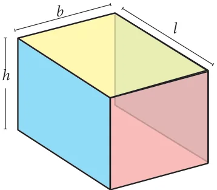
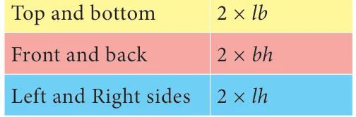
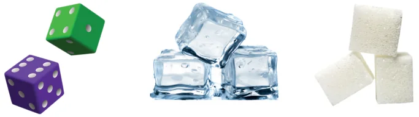
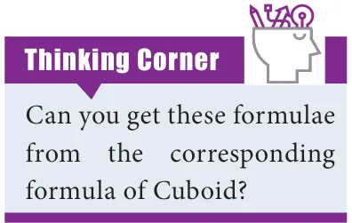
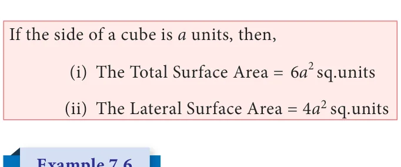
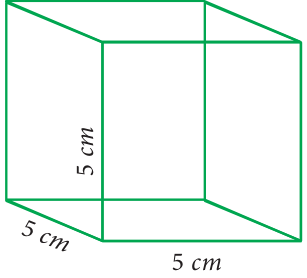
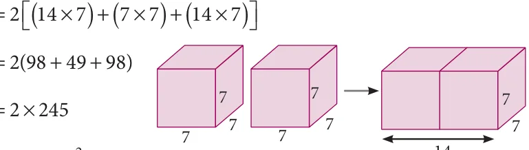
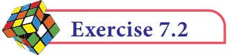

We have learnt in the earlier classes about 3-Dimension structures. The 3D shapes are those which do not lie completely in a plane. Any 3D shape has three dimensions namely length, breadth and height.
7.4.1 Cuboid and its Surface Area
Cuboid: A cuboid is a closed solid figure bounded by six rectangular plane regions. For example, match box, Brick, Book. A cuboid has 6 faces, 12 edges and 8 vertices. Ultimately, a cuboid has the shape of a rectangular box.

Total Surface Area (TSA) of a cuboid is the sum of
the areas of all the faces that enclose the cuboid. If we leave out the areas of the top and bottom of the cuboid Fig. 7.9 we get what is known as its Lateral Surface Area (LSA).
In the Fig 7.10, l, b and h represents length, breadth and height respectively.
- (i)Total Surface Area (TSA) of a cuboid


\(= 2\) (lb + bh + lh ) sq. units.
- (ii)Lateral Surface Area (LSA) of a cuboid

\(= 2 (l+b)h\) sq. units.
We are using the concept of Lateral Surface Area (LSA) and Total Surface Area (TSA) in real life situations. For instance a room can be cuboidal in shape that has different length, breadth and height. If we require to find areas of only the walls of a room, avoiding floor and ceiling then we can use LSA. However if we want to find the surface area of the whole room then we have to calculate the TSA. If the length, breadth and height of a cuboid are l, b and h respectively. Then
- (i)Total Surface Area \(= 2\) (lb + bh + lh ) sq.units.
- (ii)Lateral Surface Area \(= 2 (l+b)h\) sq.units.
Note
z The top and bottom area in a cuboid is independent of height. The total area of top and bottom is 2lb. Hence LSA is obtained by removing 2lb from 2(lb+bh+lh). z The units of length, breadth and height should be same while calculating surface area of the cuboid.
Example 7.4
Find the TSA and LSA of a cuboid whose length, breadth and height are 7.5 m, 3 m and 5 m respectively.
Solution
Given the dimensions of the cuboid; that is length (l) \(= 7.5 m\), breadth (b) \(= 3 m\) and height (h) \(= 5 m\).
\(TSA = 2(lb +\) bh + lh)
\(= 2[(7 5\). \(\times 3)+ (3 \times 5)+ (7 5\). \(\times 5)\) ]

\(= 2(22 5\). +15+ 37 5. )
\(= 2 \times 75\)
\(=150 m^{2}\)
\(LSA = 2(l +\) b) \(\times h\)
\(= 2(7 5\). \(+ 3) \times 5\)
\(= 2 \times 10 5\). \(\times 5\)
\(=105 m^{2}\)
The length, breadth and height of a hall are 25 m, 15 m and 5 m
respectively. Find the cost of renovating its floor and four walls at the rate of ₹80 per m .
Solution
Here, length (l ) \(= 25 m\), breadth (b) \(=15 m\), height (h) \(= 5 m\). Area of four walls \(= LSA\) of cuboid

\(= 2(l +\) b) \(\times h = 2(25+15) \times 5\)
\(= 80 \times 5 = 400 m^{2}\)
Area of the floor \(= l \times b\)
\(= 25 \times 15\)
\(= 375 m^{2}\) Fig. 7.12
Total renovating area of the hall
= (Area of four walls + Area of the floor)
\(= (400 + 375\) ) \(m^{2} = 775 m^{2}\)
Therefore, cost of renovating at the rate of ₹80 per \(m^{2}= 80 \times 775\)
= ₹ 62,000
7.4.2 Cube and its Surface Area
Cube: A cuboid whose length, breadth and height are all equal is called as a cube.
That is a cube is a solid having six square faces. Here are some real-life examples.

Dice Ice cubes Sugar cubes

A cube being a cuboid has 6 faces, 12 edges and 8 vertices.
Consider a cube whose sides are ‘a’ units as shown in \(^{H}\) the Fig 7.14. Now,
- (i)Total Surface Area of the cube
= sum of area of the faces (ABCD+EFGH+AEHD+BFGC+ABFE+CDHG)
= (a \(+ a + a + a + a + a\) )
=6a sq. units
- (ii)Lateral Surface Area of the cube
= sum of area of the faces \((AEHD+BFGC+ABFE+CDHG) =\) ( \(+ + +\) )
= sq. units


Find the Total Surface Area and Lateral Surface Area of the cube, whose side is 5 cm.

Solution
The side of the cube (a) \(= 5\) cm
Total Surface Area \(= 6a = 6(5\) ) =150 sq. cm
Lateral Surface Area \(= 4a = 4(5\) ) =100 sq. cm

A cube has the Total Surface Area of 486 cm . Find its lateral surface area.
Solution
Here, Total Surface Area of the cube \(= 486\) cm
\(6a = 486 \Rightarrow a = \frac{486}{6}\) and so, \(a = 81\). This gives \(a = 9\). The side of the cube \(= 9\) cm
Lateral Surface Area \(= 4a^{2} = 4 \times 9^{2} = 4 \times 81 = 324 cm^{2}\)

Two identical cubes of side 7 cm are joined end to end. Find the Total and Lateral surface area of the new resulting cuboid.
Solution
Side of a cube \(= 7\) cm Now length of the resulting cuboid (l) \(= 7+7 =14\) cm Breadth (b) \(= 7\) cm, Height (h) \(= 7\) cm So, Total Surface Area \(= 2(lb +\) bh + lh) = ( \(\times\) ) \(+( \times\) ) \(+( \times\) )

= ( \(+ +\) )
\(= \times\)
= Fig. 7.16
Lateral Surface Area \(= 2( +\) ) \(\times\)
\(= 2 14( +\) ) \(\times = \times \times\)

- 1.Find the Total Surface Area and the Lateral Surface Area of a cuboid whose
dimensions are: length \(= 20\) cm, breadth \(= 15\) cm and height \(= 8\) cm
- 2.The dimensions of a cuboidal box are \(6 m \times 400\) cm \(\times 1.5 m\). Find the cost of
painting its entire outer surface at the rate of ₹22 per m .
- 3.The dimensions of a hall is \(10 m \times 9 m \times 8 m\). Find the cost of white washing the
walls and ceiling at the rate of ₹8.50 per m .
- 4.Find the TSA and LSA of the cube whose side is (i) 8 m (ii) 21 cm (iii) 7.5 cm
- 5.If the total surface area of a cube is 2400 cm then, find its lateral surface area.
- 6.A cubical container of side 6.5 m is to be painted on the entire outer surface. Find
the area to be painted and the total cost of painting it at the rate of ₹24 per m .
- 7.Three identical cubes of side 4 cm are joined end to end. Find the total surface area
and lateral surface area of the new resulting cuboid.